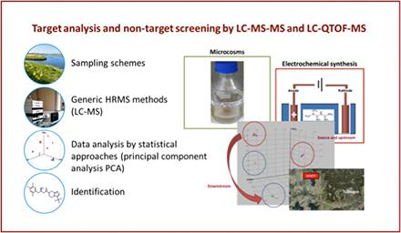

Zur Navigation
Chemical Analytics
Analytics in Water
The working group of Environmental Analytical Chemistry of the University of Tuebingen, headed by Prof. Dr. Christian Zwiener, investigates the occurrence and transformation of artificial sweeteners, antidiabetics and neuroactive pharmaceuticals in the environment and in laboratory systems which are used for the exposure of various organisms.
Hundreds of organic trace compounds from different application areas and consumer products are introduced into surface waters via wastewater discharges, among them are artificial sweeteners and pharmaceuticals. The effects of the compound cocktails on ecosystems are largely unknown. Biotic and abiotic processes further transform the original compounds to a large number of transformation products (TPs) with unknown effects.
Metformin is a good example, since it is one of the most used pharmaceuticals with more than 600 defined daily doses. Metformin occurs therefore in most wastewater treatment plant effluents and surface waters. Guanyl urea – the major transformation products of metformin – has been found in even higher concentrations in water samples.
In this project we are developing analytical methods for polar trace compounds and their transformation products with liquid chromatography and high-resolution mass spectrometry (LC-MS). Identification of transformation products will be performed by mass spectrometric approaches and electrochemical methods, supported by prediction tools for biotransformation.
Objectives
- Development of analytical methods for compound screening
- Identification of transformation products with electrochemical methods, LC-MS and prediction tools
- Investigation of environmental and laboratory samples for organic trace compounds and transformation products
 Target analysis and non-target screening
Analytics in Biota
In the project EffectNet, the working group of Effect-based Environmental Analytical Chemistry at the University of Tübingen, headed by Prof. Dr. Carolin Huhn analyzes residues of pharmaceutical products and artificial sweeteners in biota.
In this sub-project analytical methods for the identification and quantification of trace compounds in biota are developed. In addition to liquid chromatography-mass spectrometry (LC-MS), electromigration separation techniques, mainly capillary electrophoresis-mass spectrometry (CE-MS) is used, since the lead substances are very polar to strongly ionic. In addition, sample preparation strategies have to be developed due to the complex matrices of fish and snails.
Objectives
- Development and optimization of extraction procedures for the relevant substances from biota
- Establishment of analytical methods for the detection and quantification by CE-MS or LC-MS
- Examination of biota samples for organic trace compounds by CE-MS and LC-MS
Kontakt
Prof. Dr. Thomas Braunbeck
Aquatic Ecology & Toxicology
COS - Centre for Organismal Studies
University of Heidelberg
Im Neuenheimer Feld 504
D-69120 Heidelberg
braunbeck@uni-hd.de
Tel.: +49-(0)62 21-54 56 68